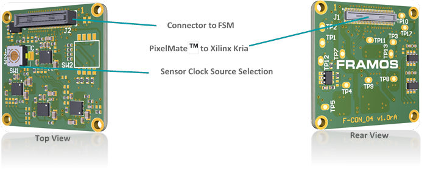
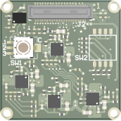
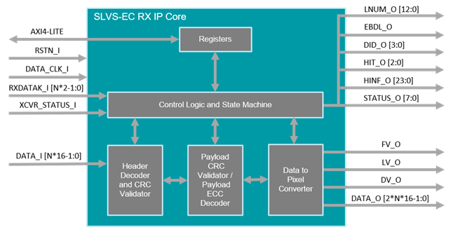

Kria™ KR260 Robotics Starter Kit |
Machine Vision Camera Tutorial |
FRAMOS KRIA Documentation¶
Overview of Sony IMX547 Sensor¶
The Sony IMX547 is a diagonal 8.8 mm (Type 1/1.8) CMOS active pixel, solid-state image sensor with a square pixel array and 5.10 M effective pixels. This image sensor contains a global shutter with variable charge-integration time and is part of the Pregius S active pixel-type CMOS image sensors. By stacking the signal processing on the back-illuminated type CMOS Image Sensor, it realizes small chip size and high sensitivity, whilst using the high picture quality global shutter pixel technology of Pregius.
Overview of FSA (Framos Sensor Adapter) Module¶
The FSA (Framos Sensor Adapter) Connects to the FSM (Framos Sensor Module) allowing with Sub-LVDS, SLVS or SLVS-EC devices.

Functional Blocks¶
Signal routing
Voltage generation for image sensor
Power up sequence for image sensor
 
Below table shows selection of Sensor Clock Source on FSA-FTx/A-V1
| Position | Description |
|---|---|
| 1 | Clock Provided from FSA (Default) |
| 2 | External Clock 1 (MCLK0) |
| 3 | External Clock 2 (MCLK1) |
Note: The above clock setting is not applicable for FSM used along with KR260.
PixelMate™ - Sub-LVDS, SLVS and SLVS-EC Pinout¶
This pinout scheme applies to all sensors that natively output image data using signals according to Sub-LVDS, SLVS or SLVS-EC specification. This layout provides eight data lanes on the connector. Devices with SLVS and SLVS-EC share the same sensor package pins therefore share the same connector pins.
The table below shows the position of each signal on the 60-pin connector in case the image sensor provides it. For further details, please refer to the image sensor Datasheet.
NOTE: Lane number assignment is applied according to SLVS numbering, which differs in most cases from the SLVS-EC lane numbering. Please refer to image sensor datasheet for correct SLVS-EC numbering.
The table shows the general signal assignment that applies to all connections using PixelMate™.
| Pin # | Type | Signal | Pin # | Type | Signal |
|---|---|---|---|---|---|
| 1 | Common Voltages (from FPA to FSA) | 3V8 | 2 | Common Voltages (from FPA to FSA) | 1V8 |
| 3 | Common Voltages (from FPA to FSA) | 3V8 | 4 | Common Voltages (from FPA to FSA) | 1V8 |
| 5 | Sensor Specific Voltages (from FSA to FSM) | V_ANA | 6 | Sensor Specific Voltages (from FSA to FSM) | V_DIG |
| 7 | Sensor Specific Voltages (from FSA to FSM) | V_ANA | 8 | Sensor Specific Voltages (from FSA to FSM) | V_DIG |
| 9 | Sensor Specific Voltages (from FSA to FSM) | V_IF | 10 | Sensor Specific Voltages (from FSA to FSM) | V_AUX |
| 11 | GND | 12 | GND | ||
| 13 | GND | 14 | GND | ||
| 15 | Sensor Signals | SDA | 16 | Sensor Signals | SCL |
| 17 | Sensor Signals | SDO | 18 | Sensor Signals | XCE |
| 19 | Sensor Signals | TOUT0 | 20 | Sensor Signals | SLAMODE |
| 21 | Sensor Signals | TOUT1 | 22 | Sensor Signals | XMASTER |
| 23 | Sensor Signals | TOUT2 | 24 | Sensor Signals | NC |
| 25 | Sensor Signals | NC | 26 | Sensor Signals | XTRIG |
| 27 | Sensor Signals | NC | 28 | Sensor Signals | XHS |
| 29 | Sensor Signals | NC | 30 | Sensor Signals | XVS |
| 31 | Sensor Signals | GND | 32 | Sensor Signals | GND |
| 33 | Sensor Signals | RST | 34 | Data Lines | D_DATA_7_P |
| 35 | Driving Clock | MCLK | 36 | Data Lines | D_DATA_7_N |
| 37 | GND | 38 | GND | ||
| 39 | Data Lines | D_DATA_6_P | 40 | Data Lines | D_DATA_5_P |
| 41 | Data Lines | D_DATA_6_N | 42 | Data Lines | D_DATA_5_N |
| 43 | GND | 44 | GND | ||
| 45 | Data Lines | D_DATA_4_P | 46 | Data Lines | D_DATA_3_P |
| 47 | Data Lines | D_DATA_4_N | 48 | Data Lines | D_DATA_3_N |
| 49 | GND | 50 | GND | ||
| 51 | Data Lines | D_DATA_2_P | 52 | Data Lines | D_DATA_1_P |
| 53 | Data Lines | D_DATA_2_N | 54 | Data Lines | D_DATA_1_N |
| 55 | GND | 56 | GND | ||
| 57 | Data Lines | D_DATA_0_P | 58 | Data Lines | D_CLK_0_P |
| 59 | Data Lines | D_DATA_0_N | 60 | Data Lines | D_CLK_0_N |
Overview of FSM (Framos Sensor Module)¶
FSM carries the Sony IMX547 camera sensor, and it is connected to Framos Sensor Adaptor (FSA). Flex cable is used to connect FSM module with KR260 carrier card. Its specification are as follows.
Model Name¶
| Model Name | FSM-IMX547 c/m |
Image Sensor¶
| Vendor / Name | Sony IMX547-AAMJ / IMX547-AAQJ |
| Shutter Type | CMOS Global Shutter |
| Technology / Grade | Pregius S (Gen4) / Industrial |
| Chromaticity | Color / Mono |
| Optical Format | 1/1.8" |
| Pixel Size | 2.74 x 2.74 µm |
| Max. Resolution | 5.1 Mpx / 2472 x 2128 px |
| Framerate (max.) | 122 FPS (2-Lane) 65 FPS (1-Lane) |
| Bit Depth(s) | 8 / 10 / 12 bit |
FSM Interface¶
| Data Interface | SLVS-EC (1 / 2 Lane) |
|---|---|
| Data Interface | SLVS-EC (1 / 2 Lane) |
| Communication Interface | I²C (4-wire serial) |
| Drive Frequency(s) | 37.125 / 54 / 74.25 MHz |
| Input Voltages | 1.1V, 1.8V, 2.9V, 3.3V |
| Interface Connector | Hirose DF40C-60DP-0.4V(51) |
| EEPROM (Sensor ID) | Yes |
Mechanical¶
| Dimensions (HxW) | 28mm x 28mm |
Environmental¶
| Operating Temperature | -30°C to +75°C (function) -10°C to +60°C (performance) |
| Storage Temperature | -40°C to +85°C |
| Ambient Humidity | 20% to 95% RH, non-condensing |
Overview of Framos SLVS-EC IP Core¶
The SLVS-EC interface standard has emerged as the high-speed interface for image sensors from Sony. SLVS-EC v2.0 interface throughput is up to 5 Gbit/s per lane at great signal integrity, which is double the times of previous SLVS-EC interface 1.2. Engineers developing solutions using Xilinx FPGAs and SoCs can take advantage of FRAMOS’s SLVS-EC RX IP Core, Development Kit, and tested source code examples. Device builders and camera vendors can de-risk the design while reaping the benefits of Sony’s latest high-speed interface.
Key Benefits & Features¶
Byte-to-pixel conversion for SLVS-EC v1.2 / v2.0
De-risk integration, reduce time to market
Reference implementation for evaluation and guidance
Flexible Lane Support in one IP CoreSupport for all supported RAW bit-depths
Error correction and ROI overlap support
AXI4 communication and control
Internal Structure of the SLVS-EC RX IP Core:

The SLVS-EC RX IP Core processes the incoming deserialized SLVS-EC packets and outputs the reconstructed pixels on the Output Data Interface. In addition, depending on the core variant, IP Core performs error detection (CRC core variant) or error correction (ECC core variant) on payload data.
Port Descriptions¶
The SLVS-EC RX IP Core ports are listed in the following table, where LANE_NUM represents the number of lanes.
| Signal | Direction | Width | Description |
|---|---|---|---|
| data_clk_i | Input | 1 | Data clock input |
| rstn_i | Input | 1 | Active low reset |
| AXI4-Lite | InOut | - | AXI4-Lite slave interface |
| data_i | Input | 16*LANE_NUM |
Input parallel data from transceiver |
| rxdatak_i | Input | 2*LANE_NUM |
Special character detection input |
| XCVR_status_i | Input | 1 | Transceiver status |
| fv_o | Output | 1 | Frame valid output |
| lv_o | Output | 1 | Line valid output |
| dv_o | Output | 1 | Data valid output |
| data_o | Output | 2 * 16 *LANE_NUM |
Parallel pixel data output |
| lnum_o | Output | 13 | Line number output |
| ebdl_o | Output | 1 | Embedded valid output |
| did_o | Output | 4 | Data ID output |
| hit_o | Output | 3 | Header info type output |
| hinf_o | Output | 24 | Header information output |
| status_o | Output | 8 | Core status output |
Framos IPs license¶
For more information about how the Framos SLVS-EC RX IP-Core would benefit your next project or to request the full SLVS-EC IP-Core integration support, please contact the Framos imaging experts at: sales@framos.com